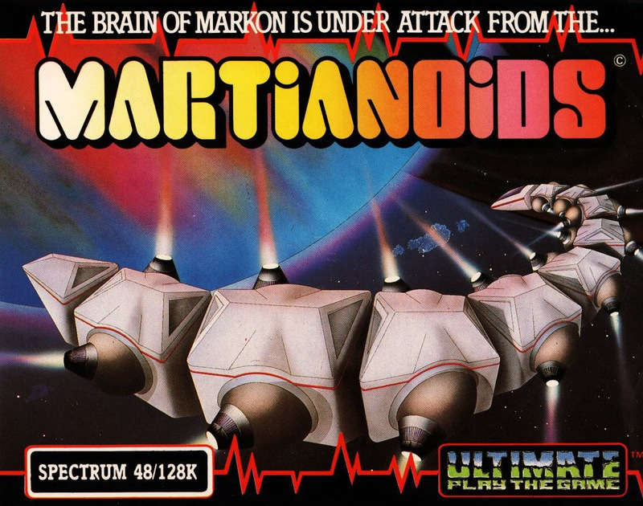
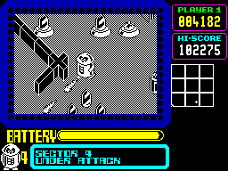
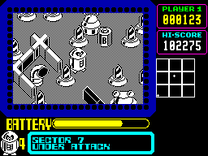

Martianoids


{kind=link}

| Publisher: | Ultimate |
| Price: | £9.95 |
| Year: | 1987 |
| Source: | CRASH, Issue 40 |
The ‘Markon Dawn’ slides through deep space — a vast robot ship sent to search for new life forms and knowledge. Cocooned within is the largest and most powerful computer known to the Markon Empire — The Brain of Markon.
As the ship passes through alien territory it is attacked by Martianoids. These maggot their way through The Brain of Markon disrupting its programs, wriggling between sectors like damp hand towels.

It is imperative that The Brain is defended...
You have control of a defending droid which can protect and steer randomly transmitted programs between Transmitter and Receiver in each sector. With its destination successfully reached the program activates defence mechanisms preventing further damage to that Brain section. When all nine sectors are activated The Brain is safe.
The droid itself can come under attack from Martianoids, to avoid them it can move to the left or right, and forwards. Energy is drained from the droid by contact with kamikaze Martianoids, though the alien’s resultant death does give extra points. When energy levels become low, batteries about the Brain can be used for recharging. An indicator at the base of the screen shows battery level, should it drop to zero, the droid loses one of its four lives.

maggot their way into the Brain of
Markon. Only your defending droid
can save the day...
For defence, the droid carries lasers and blasters capable of destroying Aliens. Their use requires care if internal walls, active components and replacement cones are not to be taken out. A score is awarded for each Martianoid killed.
The photon weapons of the Martianoids can destroy all that is in their path. Components that have received damage can be substituted using Replacement Cones and the droid’s ‘pick up and drop’ facility. Should all Active Components in a sector be destroyed then that sector is dead. Replacement Cones can be used to block off disposal chutes, if a program slips down one it is lost.
The droid’s position, and that of the program within The Brain are displayed on a grid map. The status of each sector is indicated by colour — white indicates sector activation, flashing red and yellow signifies an attack by Martianoids, whilst red means sector death.
A scrolling display supplies updated information on what is happening in parts of the Brain which is currently off screen.
CRITICISM
“Ultimate have gradually gone down in everyone’s view, and producing a game as boring as this just emphasises the apparent demise of the ‘once mighty’ company. It’s a pity to see such a reputation fade, but it’s their own fault; Martianoids has pretty graphics, but little else, as there isn’t much interest to be found in its walls.”
MIKE
“Shock, excitement, hysteria... An Ultimate game, hooray! Oh, hang on, it’s not very good is it? Oh well, perhaps we’ll have to idolise someone else now. I’ve been playing this for ages now and I can’t get the hang of it at all — then again most ‘Ultimates’ did take a while to get into but not this long surely. The graphics are a bit naff when compared to greats such as Pentagram and Gunfright and the sound is simply below average. Martianoids lacks the gameplay and general ‘finish’ that we’ve come to expect from Ultimate.”
BEN
“Ultimate return with a new distributor, but the same old 3D game. The graphics have taken a dive since the days of Knight Lore. These don’t seem to have the appeal or the colour of the original stuff. The control method is much too slow and unresponsive to use successfully. I loved the old stuff but this is something completely different. Don’t buy it because of the name.”
PAUL
COMMENTS
| Control keys: | C B M right, A S D ... ENTER forward, Q E T U O laser, W R Y I P blaster, 1 2 3 ... 0 Z SYMBOL SHIFT pick up/drop |
| Joystick: | Kempston, Cursor, Interface 2 |
| Use of colour: | Monochrome playing area with decorative edges |
| Graphics: | Smooth 3D animation |
| Sound: | Average tune and effects |
| Skill levels: | One |
| Screens: | Continuously scrolling map |
| General rating: | Not up to Ultimate’s usual standard. |
| Presentation: | 79% |
| Graphics: | 74% |
| Playability: | 55% |
| Addictive qualities: | 56% |
| Value for money: | 54% |
| Overall: | 58% |